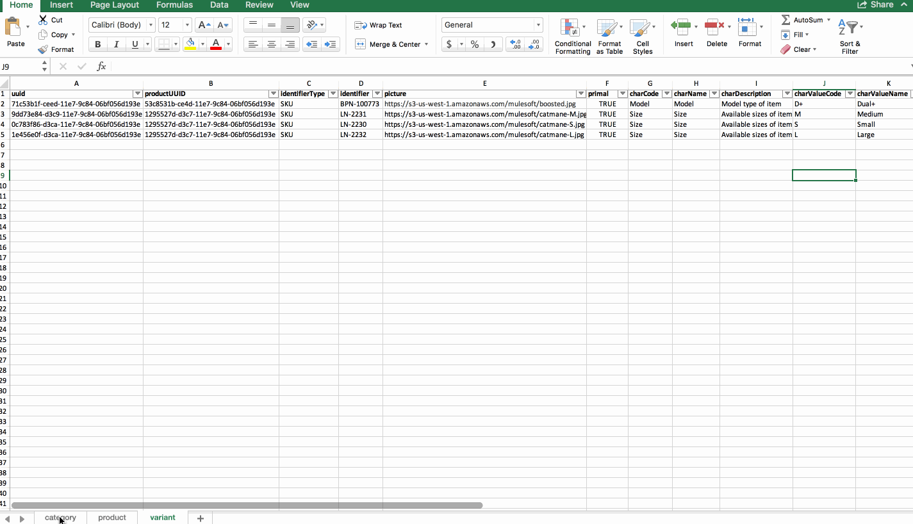

Mastering Mulesoft Anypoint Platform
Designing your first API
- API Specifications using API Designer
- How to use API specifications to begin a Data Integration
- Time-saving considerations while designing API Specifications
- Test/Validate API specification in API Console
API Specification
It is a contract which can be consumed by humans and machines. Has README and API Definitions (e.g. WSDL) files. RAML (RESTful API Modeling Language) is API specification language for API Designer
- Serves as documentation for the consumption of the API
- Reuse of deployed API by future apps via Exchange
- The consumers of the APIs can perform acceptance tests before the app is ever built
- Can be used to pre-populate your implementation with artifacts and metadata to reduce development time
TODO
Sign up for a 30-day Anypoint Platform account by clicking here Sign up
API Designer will be used for creating API Specification
- Mule Apps will be created in Flow Designer
- Download Product-Database from here
- It has 3 tabs
- Category
- Product
- Variant
- It has 3 tabs

Let us create an eCommerce API
- Product API
- provide details about a specific item in the store
/products/{productId}
- provide details about a specific item in the store
Design Center
- Cloud based development environment for building Mule Apps and API specs